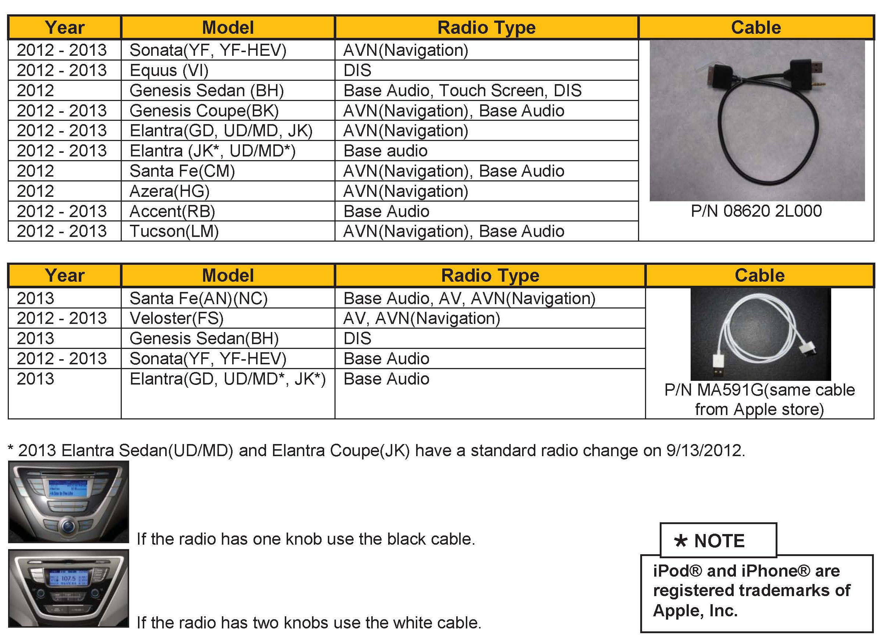

Cell Phone/Audio - iPhone/iPod(R) USB Data Cable
GROUPElectrical
NUMBER
12-BE-019
DATE
October 2012
MODEL(S)
ALL 2012 - 2013MY
SUBJECT:
IPHONE/IPOD USB DATA CABLE
DESCRIPTION:
It is very important that a compatible USB/IPOD cable is used with radio units for 2012 and 2013 Model Year vehicles to ensure full iPod features and functions in the audio and navigation system.
If a non compatible cable is used, the audio screen will display "Aux External Device Connected" and all iPod functions will be required to be controlled from the iPod or iPhone unit. It will also not charge the iPod or iPhone.

Refer to the table for the cable and vehicle model compatibility.
Applicable Vehicles: All 2012 - 2013MY equipped with a USB jack